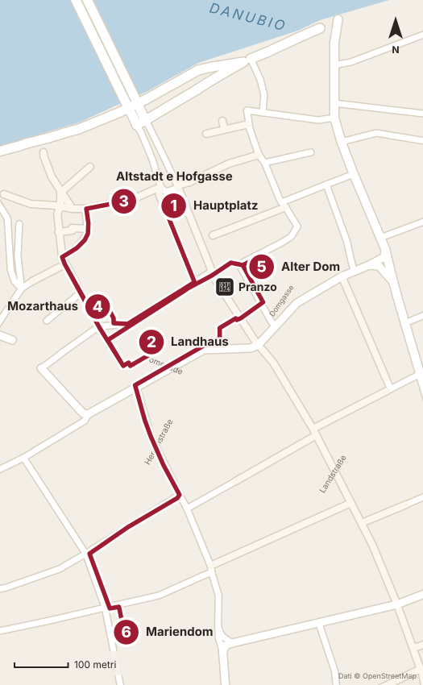

🎧 Per ascoltare i racconti servono cuffie o auricolari collegati al telefono.
Le tappe
🍴 Pranzo
Vapiano, Schmidtorstraße 1, all'angolo con l'Hauptplatz.
Vapiano, Schmidtorstraße 1, all'angolo con l'Hauptplatz.
🗺 La mappa del percorso

♪ Perché «Cammino Sonoro»
Linz è una città che si racconta con la musica. Bruckner fu per tredici anni organista del Duomo Vecchio. Mozart qui scrisse in quattro o cinque giorni la Sinfonia «Linz». Keplero qui pubblicò «L'armonia del mondo». E dal 1979 la Klangwolke, la «nuvola sonora», porta la musica sul Danubio. Per questo la visitiamo così: camminando e ascoltando.